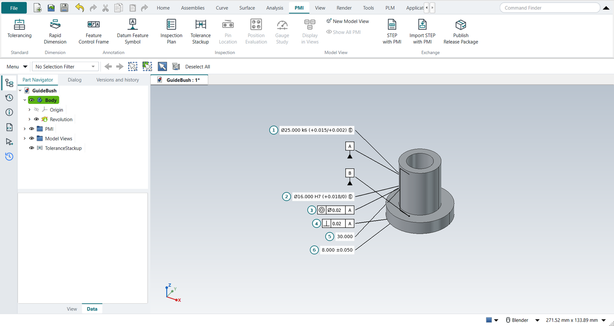
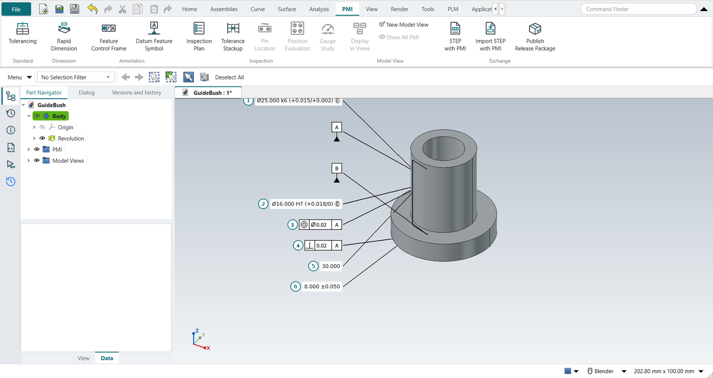
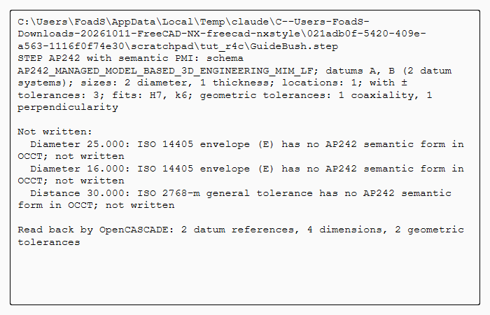
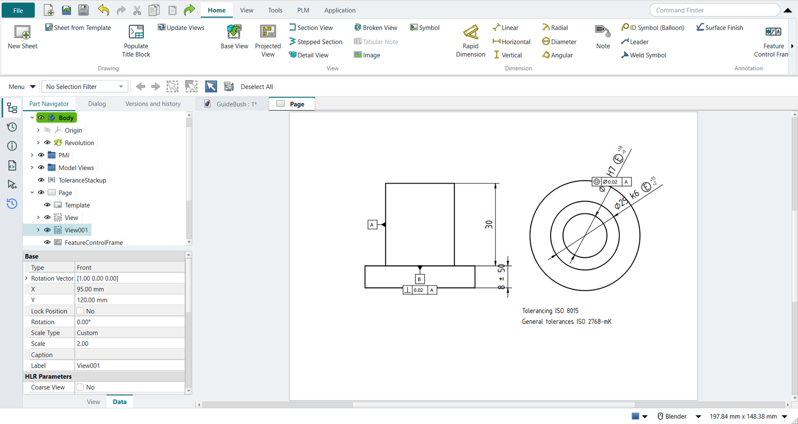

Tutorial T: A guide bush documented to ISO GPS
| Book |
The PMI workflow of Wünsch, Pilz and Vajna, Siemens NX für Einsteiger – kurz und bündig, 4th ed., section 6.10 (PMI tab, Rapid Dimension on a cylindrical face, tolerances, the PMI folder); the part is ours |
| Standards |
ISO 16792 (3D annotation), ISO 286 (fits), ISO 14405 (the envelope), ISO 8015 (independency), ISO 2768 (general tolerances), ISO 1101 and ISO 5459 (geometrical tolerances and datums) |
| You learn |
PMI › Tolerancing, Rapid Dimension with a tolerance class, the envelope, datums, frames, Inspection Plan, the ISO 8015 trap, a fit as a stack-up, STEP with PMI, Inherit PMI |
| Sizes |
A flange Ø40 × 8, a body Ø25 × 30 pressed into a housing, a bore Ø16 for a sliding shaft |
The bush’s body is pressed into a housing (Ø25 k6 in an H7 hole); its shoulder seats on the housing; a Ø16 g6 shaft slides in its bore.
Step by step
1. The part and its standard
The bush is modelled by script; the exercise is the documentation.
PMI › Tolerancing: ISO GPS, general tolerances ISO 2768-mK.
2. Sizes with their fits
Select the body’s cylinder, PMI › Rapid Dimension: tolerance class k6, Envelope ticked, OK: Ø25.000 k6 (+0.015/+0.002) Ⓔ.
Then the bore: H7, without the envelope for now.
3. Datums and geometrical tolerances
Datum Feature Symbol A on the body’s cylinder, B on the shoulder. Feature Control Frame: coaxiality Ø0.02 to A on the bore; perpendicularity 0.02 to A on the shoulder.
4. Dimensions without a tolerance of their own
Rapid Dimension between the shoulder and the top: 30, nothing typed; the flange 8 ±0.05. The 30 is covered by ISO 2768-m: ±0.2 (over 6 up to and including 30).

5. The inspection plan, and the ISO 8015 trap
PMI › Inspection Plan numbers the six characteristics and checks the PMI. It flags the bore: H7 is a fit, but under ISO 8015 independency the size controls only two-point sizes, not form. A bore within H7 at every section can still be bent or barrel-shaped enough to bind the shaft. Tick the bore’s Envelope in the property view and run the plan again: no warnings.

6. The fit as a stack-up
Tolerance Stackup, select the bore’s PMI dimension, Add from PMI; Add Typed for the shaft: 16, direction −, class g6.
The worst case is a clearance of 0.006 to 0.035 mm, as ISO 286 gives for Ø16 H7/g6.
The stack-up reads the bore’s class from the PMI: change it, and the fit follows (tutorial V does).
7. STEP with PMI
PMI › STEP with PMI, a file name, OK. The file holds the bush and its PMI as STEP AP242 data: datums A and B, the two diameters with H7 and k6, the 8 ±0.05 as a size, the 30 as a location, the coaxiality and perpendicularity frames with their datums. OpenCASCADE reads it back: 2 datum references, 4 dimensions, 2 geometrical tolerances. The envelopes and the ISO 2768 note are listed as not written: AP242 in OpenCASCADE has no place for them.

8. The drawing inherits the PMI
Ctrl+Shift+D, New Sheet, a top view and a front view at 2:1. Select each view and click Inherit PMI: the diameters with k6 and H7 and Ⓔ, the 30 and the 8 ±0.05, the frames, the datum symbols, and the note Tolerancing ISO 8015 · General tolerances ISO 2768-mK.

The replay
| # | In the book (NX) | In FreeCAD NX-Style | Result | Notes |
|---|---|---|---|---|
T1 |
The guide bush: flange Ø40 x 8, body Ø25 x 30, bore Ø16 |
modelled by script (the exercise is the documentation) |
same |
volume 17139.0 mm^3, expected 17139.0 |
T2 |
PMI tab > Tolerancing: ISO GPS, general tolerances ISO 2768-mK |
ribbon 'PMI › Standard > Tolerancing', 'ISO 2768-mK' typed, MB2 = OK |
differs |
standard ISO, general ISO 2768-mK: what a drawing’s title block says (NX keeps it in the drafting standard and a general note); stored with the PMI folder of the part |
T3 |
Rapid Dimension on the body’s cylinder: Ø25 k6 with the envelope Ⓔ (it is pressed into the housing) |
body selected + ribbon 'PMI › Dimension > Rapid Dimension'; 'k6' typed, Envelope ticked; MB2 = OK |
differs |
Ø25.000 k6 (+0.015/+0.002) Ⓔ; NX: the cylindrical face is picked in the graphics window and the PMI placed with a click; here it is placed beside the face |
T4 |
Datum Feature Symbol A on the Ø25 body (its axis) |
body selected + ribbon 'PMI › Annotation > Datum Feature Symbol'; letter A; MB2 = OK |
differs |
datum feature A |
T5 |
Datum Feature Symbol B on the shoulder that seats on the housing |
shoulder selected + ribbon 'PMI › Annotation > Datum Feature Symbol'; letter B; MB2 = OK |
differs |
datum feature B |
T6 |
Rapid Dimension on the bore: Ø16 H7 (no envelope yet) |
bore selected + ribbon 'PMI › Dimension > Rapid Dimension'; 'H7' typed; MB2 = OK |
differs |
Ø16.000 H7 (+0.018/0) |
T7 |
Coaxiality of the bore Ø0.02 to A (ISO 1101; the symbol ASME calls concentricity) |
bore selected + ribbon 'PMI › Annotation > Feature Control Frame'; concentricity, Ø0.02, datum A; MB2 = OK |
differs |
concentricity | Ø0.020 | A |
T8 |
Perpendicularity of the shoulder 0.02 to A |
shoulder selected + ribbon 'PMI › Annotation > Feature Control Frame'; perpendicularity, 0.02, datum A; MB2 = OK |
differs |
perpendicularity | 0.020 | A |
T9 |
Rapid Dimension: the body’s length 30, no tolerance of its own (ISO 2768-m, over 6 up to 30: ±0.2) |
shoulder, top selected + ribbon 'PMI › Dimension > Rapid Dimension'; nothing typed; MB2 = OK |
differs |
30.000 |
T10 |
Rapid Dimension: the flange 8 ±0.05 |
under, shoulder selected + ribbon 'PMI › Dimension > Rapid Dimension'; +0.05 and −0.05 typed; MB2 = OK |
differs |
8.000 ±0.050 |
T11 |
Inspection Plan: the characteristics, numbered, and the checks |
ribbon 'PMI › Inspection > Inspection Plan' |
differs |
the check finds the bore’s H7 without the envelope: under ISO 8015 a size controls only local two-point sizes, so the fit is not guaranteed. NX has no such check |
T12 |
The bore gets the envelope Ⓔ; the plan again |
the PMI’s Envelope property; Inspection Plan |
differs |
6 characteristics, no errors or warnings; the length 30 inspected at 29.8 to 30.2 (ISO 2768-m); bore Ø16.000 H7 (+0.018/0) Ⓔ |
T13 |
The fit Ø16 H7/g6 as a stack-up: bore from the PMI, shaft by its ISO 286 class |
Add from PMI (the bore’s dimension) + Add Typed: 16, '-', class g6 |
differs |
clearance 0.006 to 0.035 mm worst case, as ISO 286 gives for 16 H7/g6 (0.006 to 0.035); a later change of the PMI’s class follows |
T14 |
The bush with its PMI in the graphics window |
render of the graphics window |
same |
5.3% of the view shows the part (an occupancy check: something is drawn; the shape itself is checked by its geometry) |
T15 |
PMI > STEP with PMI: the bush and its PMI as STEP AP242 data |
ribbon 'PMI › Exchange > STEP with PMI', the file name typed, MB2 = OK |
differs |
schema AP242_MANAGED_MODEL_BASED_3D_ENGINEERING_MIM_LF; datums A, B (2 datum systems); sizes: 2 diameter, 1 thickness; locations: 1; with ± tolerances: 3; fits: H7, k6; geometric tolerances: 1 coaxiality, 1 perpendicularity; read back by OpenCASCADE: {'datums': 2, 'dimensions': 4, 'geometric_tolerances': 2}. NX writes PMI to STEP AP242 too; FreeCAD’s own STEP export drops it. The envelope Ⓔ and the ISO 2768 note have no semantic AP242 form in OpenCASCADE and are listed as not written |
T16 |
Drafting: New Sheet, a top view and a front view at 2:1 |
Ctrl+Shift+D, ribbon 'New Sheet', twice 'Base View' with the body selected |
differs |
the second Base View stands in for a projected view, as in tutorial H |
T17 |
Inherit PMI on each view: the dimensions with their ISO classes and the envelope, the frames, the datum symbols, and the tolerancing note |
each view selected + ribbon 'Drafting > Inherit PMI' |
differs |
4 dimensions [8.0, 16.0, 25.0, 30.0] (⌀%.3w k6 Ⓔ; ⌀%.3w H7 Ⓔ; %.2w; %.2w), 4 symbols, note ['Tolerancing ISO 8015', 'General tolerances ISO 2768-mK']. NX inherits PMI from a model view into a drawing view; FreeCAD has no PMI, NXStyle adds both |
| Result | Means |
|---|---|
same |
The book’s NX steps work as written. |
differs |
It works, but the FreeCAD way is different; the notes say how. |
limit |
The book’s way fails in FreeCAD itself; a workaround follows in the next steps. |
missing |
FreeCAD has no such function; a stand-in follows. |
skipped |
Not replayed; the notes give the reason. |
FAILED |
Did not work. |
What differs from NX
-
NX places each PMI with a click; here a PMI is placed beside its face. This bush’s PMI are made with no work view, so they show in every model view; tutorial Y works in model views.
-
NX has no ISO 8015 check and no inspection plan; NX-Style’s come from the PMI’s semantics.
-
NX writes PMI into STEP AP242 and JT; NX-Style writes STEP AP242 with semantic PMI only (no graphical PMI, no JT).